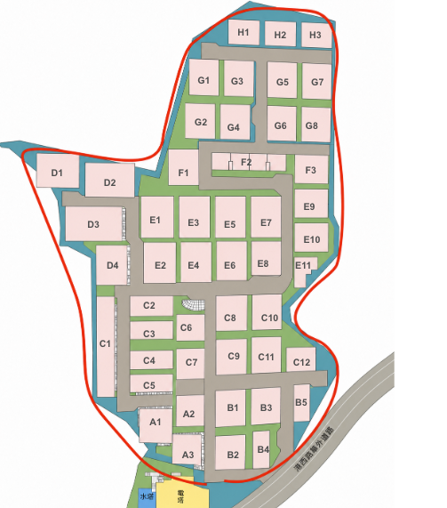

社區導航資料管理 V17
在這裡修改資料，完成後下載新的 community-data.json，再到 GitHub 覆蓋同名檔案。
① 在本頁修改 → ② 點「下載新版 JSON」→ ③ GitHub 進入 data 資料夾，上傳並覆蓋 community-data.json。網址與 QR Code 都不用改。
正在載入資料……
基本設定
修改標題、位置文字與預設交通方式。
門牌對照
門牌必須是數字；區塊請從 A1～H3 中選擇。相同區塊可以有兩個門牌。
| 門牌 | 區塊 | 操作 |
|---|
禁止通行點
直接點地圖新增紅色禁止區。點紅圈可選取，再調整半徑或刪除。

路線編輯
選擇交通方式與區塊後，可以檢視現有路線。按「重新繪製」後，依序點擊道路中心，最後按「儲存路線」。
匯入／匯出
修改完成後下載 JSON。若要繼續編輯以前下載的資料，可在此匯入。
GitHub 覆蓋位置
community-address-guide └─ data └─ community-data.json ← 用下載的新檔覆蓋這個檔案